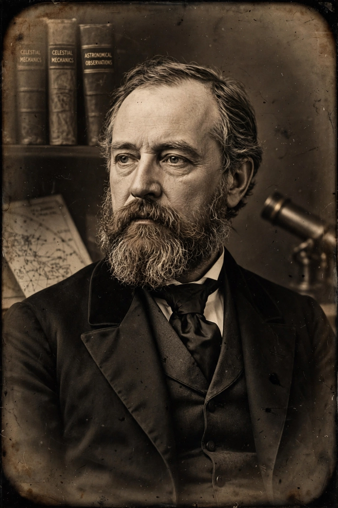

From Wikipedia, the free encyclopedia
| Edward Charles Pickering | |
|---|---|
 | |
| Born | July 19, 1846 Boston, Massachusetts, U.S. |
| Died | February 3, 1919 (aged 72) Cambridge, Massachusetts, U.S. |
| Alma mater | Harvard University |
| Known for | Director of Harvard College Observatory; stellar photometry and spectroscopy; "Pickering's Harem" of women computers |
| Awards | Gold Medal of the RAS (1886, 1901); Henry Draper Medal (1888); Bruce Medal (1908) |
Edward Charles Pickering (July 19, 1846 – February 3, 1919) was an American astronomer and physicist and the younger brother of fellow astronomer William Henry Pickering. He served as director of the Harvard College Observatory from 1877 until his death in 1919, a tenure of 42 years during which he transformed the observatory into a leading center of astrophysics.
Pickering graduated from Harvard in 1865 and taught physics at the Massachusetts Institute of Technology, where he established one of the first physics teaching laboratories in the United States. Appointed director of Harvard's observatory in 1877, he redirected its work from positional astronomy toward the new sciences of stellar photometry and spectroscopy.
Under Pickering, the observatory undertook vast photographic surveys of the sky. He developed the meridian photometer to measure stellar magnitudes precisely, organized a global network of observing stations (including a southern station at Arequipa, Peru), and drove the Henry Draper Catalogue project, which classified the spectra of more than 225,000 stars.
Because photographic plates accumulated faster than they could be analyzed, Pickering employed a large staff of women — derisively nicknamed "Pickering's Harem" by some contemporaries, today celebrated as the Harvard Computers — to measure and classify stellar data. They included Williamina Fleming, Antonia Maury, Annie Jump Cannon, who devised the Harvard classification scheme (O, B, A, F, G, K, M) still in use, and Henrietta Swan Leavitt, whose period–luminosity relation for Cepheid variables became a cornerstone of cosmic distance measurement. In 1889 Pickering also announced the first spectroscopic binary star, Mizar.
Pickering twice received the Gold Medal of the Royal Astronomical Society — jointly with his brother in 1886 and again in 1901 — and won the Henry Draper Medal and the Bruce Medal. The lunar crater Pickering and the asteroid 784 Pickeringia are named for him and his brother.